Retenu : la bannière B2 sur fond noir, avec le point vert à gauche, et la typo T2. Juste dessous, la même sur vert forêt pour comparer. Les cinq bannières et les six typographies d'origine suivent.
Retenue
B2
Fond noir, point vert à gauche
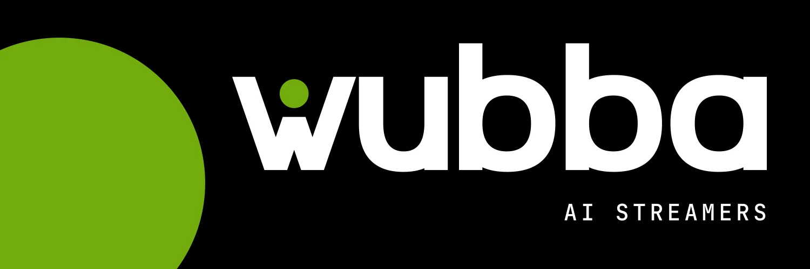
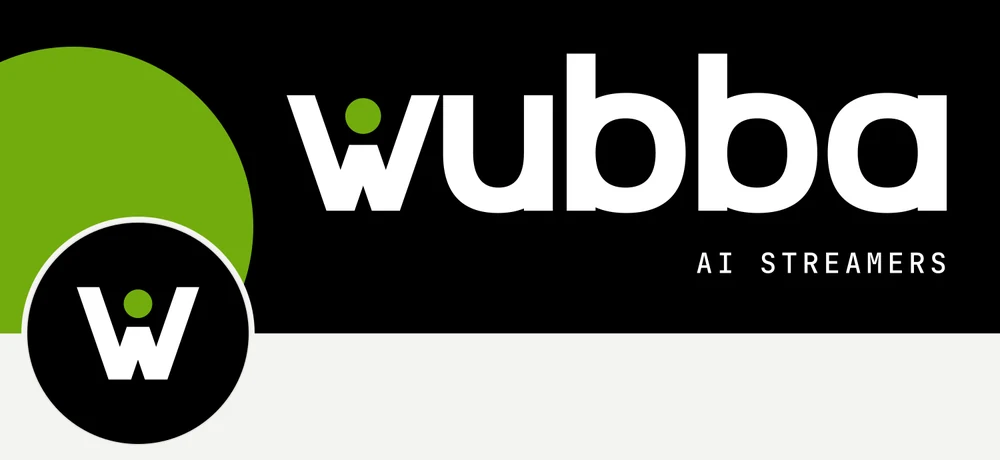
Sur un profil X : la photo de profil noire se pose sur le disque vert
#000000 fond#FFFFFF mot#72AC0E vert
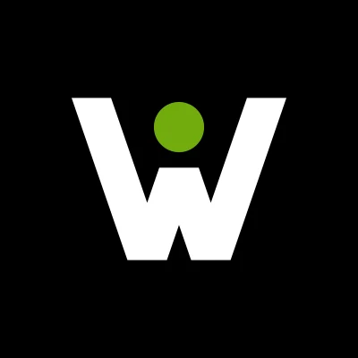
Typo T2 : Sora pour les titres, Figtree pour le texte, JetBrains Mono pour les petites mentions comme « AI STREAMERS ».
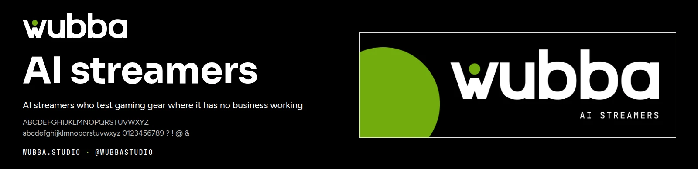
B2
À comparer : fond vert forêt
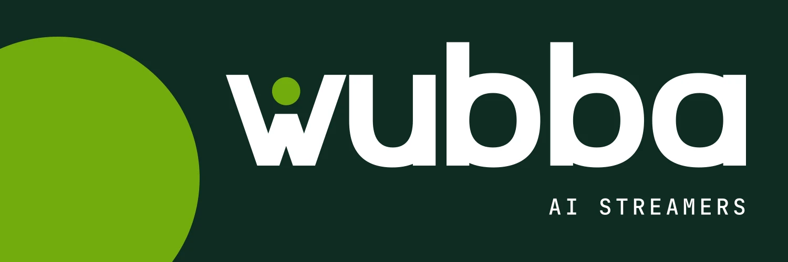
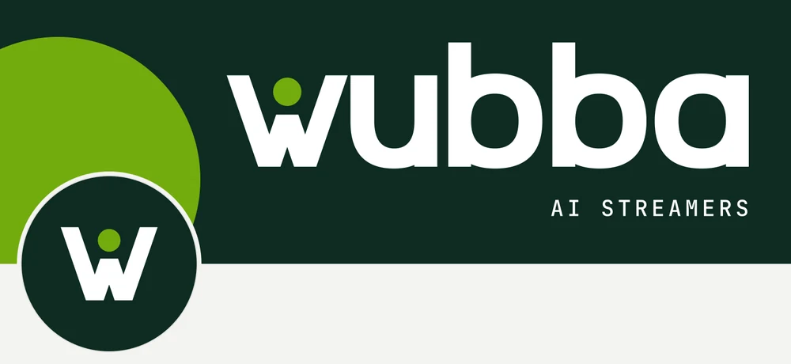
Sur un profil X
La même bannière sur vert forêt #0E2B22. Le noir avec ce vert rappelle Nvidia, dont le vert est #76B900.
Bannières X
1500 × 500, sans coins ni slogan. Sous chaque bannière, la même vue sur un profil X, pour vérifier que l'avatar ne cache rien. La mention prendra la typo que tu choisiras plus bas.
B1
Centré
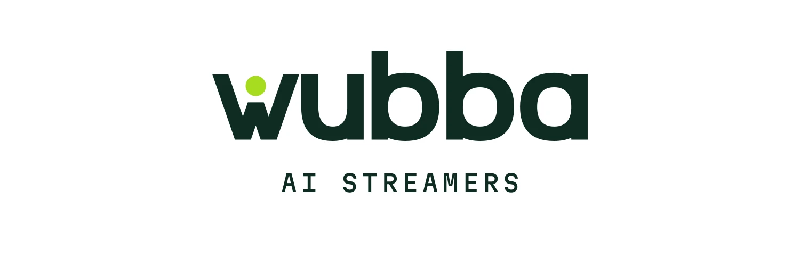
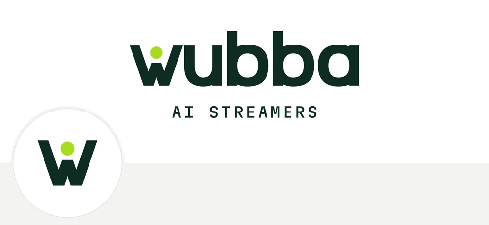
Sur un profil X, avec l'avatar
Le logo au milieu, la mention dessous. La plus sûre : elle tient sur tous les écrans, l'avatar ne touche rien.
B2
Géant
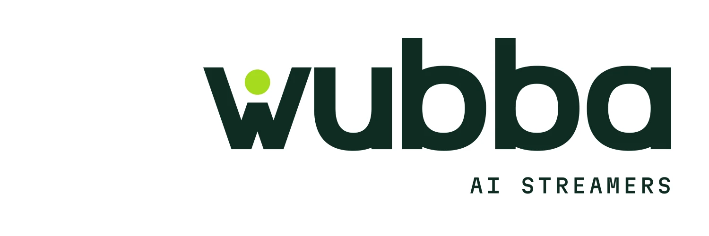
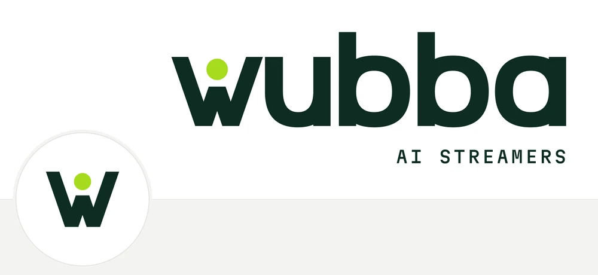
Sur un profil X, avec l'avatar
Le logo aussi grand que possible, calé à droite pour laisser la place à l'avatar. La plus forte dans un fil.
B3
Éditorial à droite
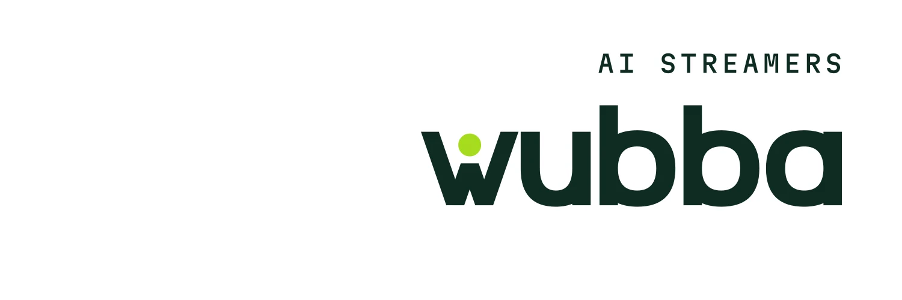
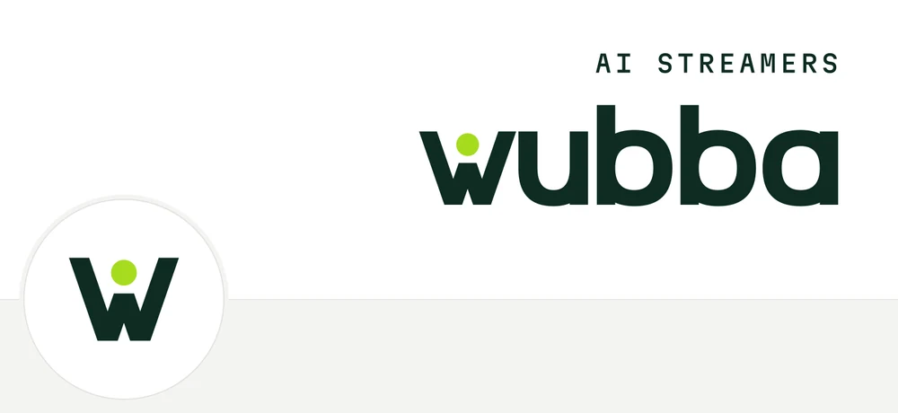
Sur un profil X, avec l'avatar
La mention en petit au-dessus, le logo dessous, tout aligné à droite. Calme, très « studio ».
B4
Le point
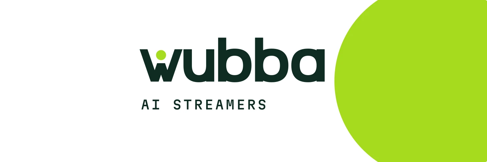
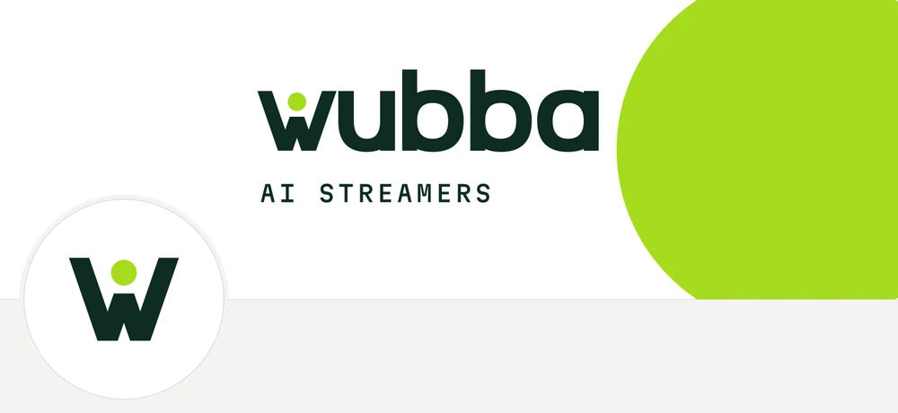
Sur un profil X, avec l'avatar
Un grand disque lime reprend le point du w et déborde du cadre. La seule avec un vrai aplat de couleur.
B5
En ligne
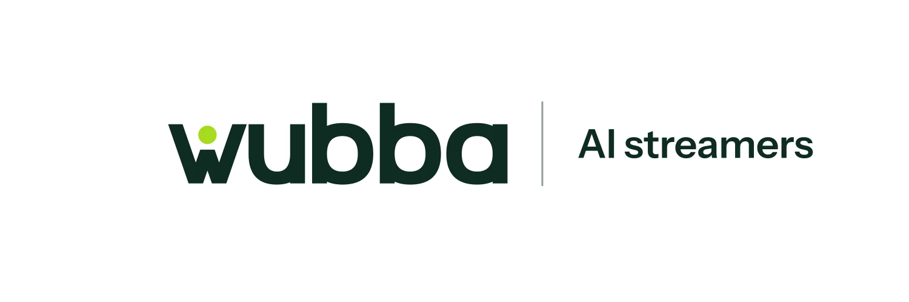
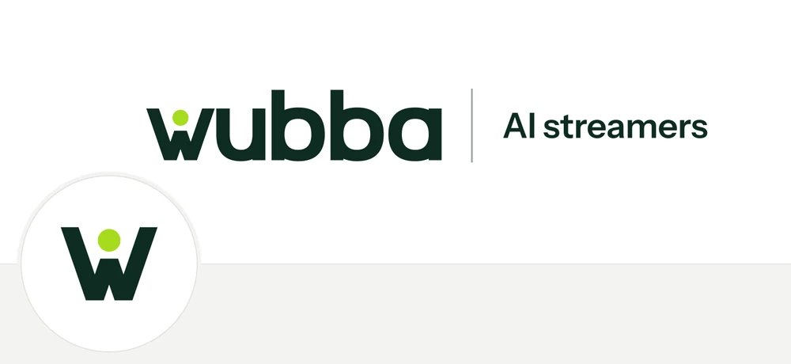
Sur un profil X, avec l'avatar
Le logo et « AI streamers » sur une seule ligne, séparés par un filet. Se lit d'un coup, comme une signature.
Typographies
Chaque planche montre le titre, le texte et les petites étiquettes, avec le logo et la bannière centrée dans cette typo. Le logo, lui, ne change pas : il est dessiné. Les trois familles de chaque paire sont gratuites sur Google Fonts.